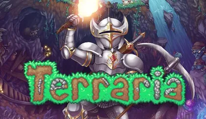

Exploração
Conheça diferentes biomas, inimigos, chefes e regiões que podem ser encontrados durante a aventura.
Terraria é um jogo de aventura, exploração e construção em que o jogador pode explorar um mundo gerado de forma procedural, coletar recursos, criar equipamentos, construir estruturas e enfrentar diferentes inimigos e chefes.
Um mundo gerado de forma procedural é criado automaticamente pelo jogo por meio de regras e algoritmos, fazendo com que diferentes elementos do mundo possam variar a cada geração.
Durante a aventura, o jogador pode encontrar diversos biomas, personagens, itens e desafios. A progressão permite conseguir equipamentos melhores e explorar áreas cada vez mais perigosas.

Conheça diferentes biomas, inimigos, chefes e regiões que podem ser encontrados durante a aventura.
Descubra armas, armaduras, acessórios e outros itens importantes para a progressão do personagem.
Entenda como o jogador pode evoluir e enfrentar desafios cada vez maiores durante sua jornada.